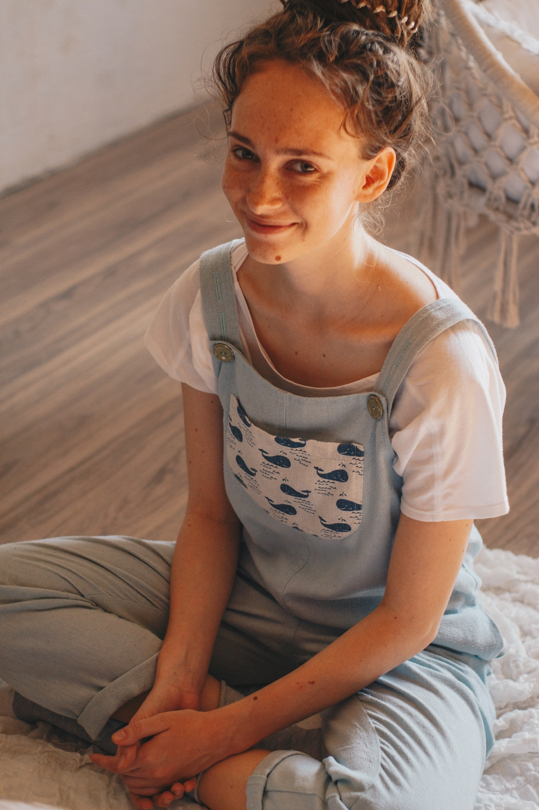

Привет, меня зовут Марина)
Хочу тут приоткрыть свою историю
Я занималась художественной гимнастикой 10 лет и достигла тех результатов, которые очень хотела. Этот опыт очень важен для меня. Из него следует, что я была и в состоянии, когда выбрала не чувствовать потребности своего тела, игнорировать боль, усталость и в состоянии возвращения чувствительности своему телу.
В 18 лет я поступила в институт ГРПУ им. А. И. Герцена, в котором получила базовое психологическое образование. С первого курса я начала обучаться дополнительно психологическому консультированию и соответственно в рамках учебной группы практиковала (2016 год).
Далее я освоила первую ступень Транзактного анализа (2017 год) и продолжила свою терапевтическую практику. Меня сильно увлёк этот процесс и я занимаюсь терапией, теперь ещё и в рамках телески по сей день, очень хочу, чтобы эта моя любовь продлилась как можно дольше:)
В 2018 году я была слушательницей семинара по работе с клиентами, подвергшимися эмоциональному, физическому и сексуальному насилию. Этот семинар оказался для меня ещё одним важным поворотным моментом в профессии, он тронул до глубины души, я увидела значимость телесного опыта во всех сферах жизни.
Логичным следующим шагом оказалось годовое обучение телесно-ориентированной психологии в русле структурной психосоматики. И с 2018 года я практикую телесную терапию с клиентами)
Я стабильно беру супервизии, чтобы наша работа с клиентами была максимально безопасной
А ещё с 2016 года прохожу свою личную терапию, и это ещё одно сокровище моей профессии, я люблю и эту сторону работы и хочу продолжать осваивать свою глубину, чтобы яснее видеть процесс с клиентами и, конечно, возвращаться к себе и подходить всё ближе и ближе.
P.S.: информация про моё обучение будет пополняться по мере того, как я буду осваивать новые учебные программы, так что впереди много интересного!)
Хочется добавить, что я вижу себя человеком чувствительным, эмпатичным, и бережным. На многие вещи смотри с широко открытыми глазами, потому что очень интересно, удивительно, как бывает ещё, за полем моего зрения. Люблю музыку и танцы, мне нравится творчески подходить ко всему, что касается моей жизни, поэтому и терапия для меня процесс в основном творческий, я ценю и берегу все эти важные свои качества.
Мое образование
"Телесно-ориентированная психология" (структурно-психосоматический подход)
{kind=link}
Удостоверение о повышении квалификации
Кем выдан: международный институт практической психологии
Год получения: 2019 год
Телесно-ориентированная психология
{kind=link}
Сертификат об обучении
Кем выдан: школа структурной психосоматики
Год получения: 2019 год
Телесные практики как способ восстановления разорванных связей между осознованием и чувствами
{kind=link}
Сертификат о принятии участия в обучающем семинаре
Кем выдан: центр транзактного анализа
Год получения: 2018 год
Психотерапия с клиентами, подвергшимися эмоциональному, физическому и сексуальному насилию
{kind=link}
Сертификат о принятии участия в обучающем семинаре
Кем выдан: центр транзактного анализа
Год получения: 2018 год
Теория и навыки психотерапевтического консультирования с использованияем транзактного анализа
{kind=link}
Удостоверение о повышении квалификации
Кем выдан: восточно-европейский институт психоанализа
Год получения: 2017 год
Основы психологического консультирования
{kind=link}
Сертификат о прохождении курса
Кем выдан: альянс практикующих психологов
Год получения: 2016 год